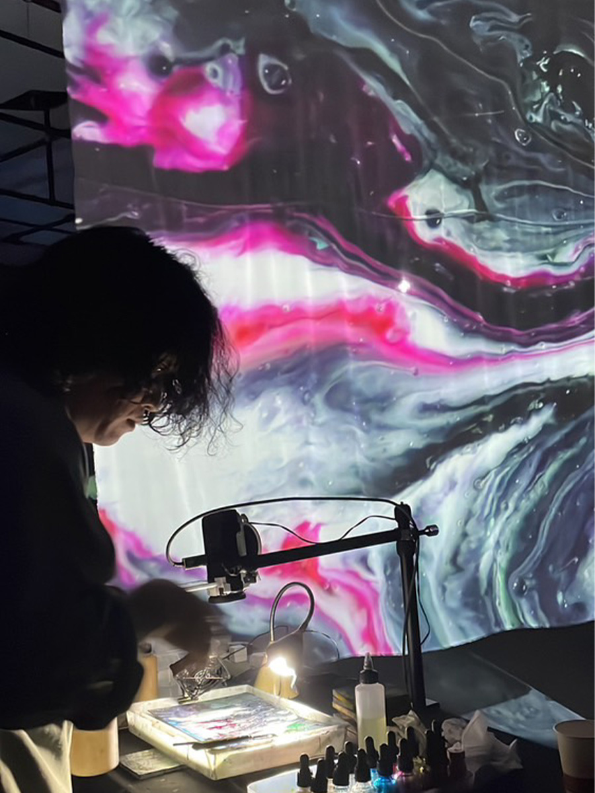

-VISUAL ART WORKS


Keiji Matsuoka / 松岡恵二
Visual / Sound Artist
Keiji Matsuoka is a Visual / Sound Artist who works with everyday materials such as liquid, paper, metal,and light, as wel as electronic instruments, exploring fluidity and chance through visual and soundperformance.
Starting from the physical behavior of analog materials and the unpredictable phenomena that emerge from them, Matsuoka improvisationaly combines image, sound, light, and the body, expanding thephenomena that arise in each situation.
Rather than focusing on completing a work, he approaches his practice as a process of giving impulses to phenomena and witnessing what emerges from them.
A central part of his practice is improvisational visual colaboration with musicians, dancers, and performers.
In particular, in live colaborations with musicians, he expands the sounds and physical movements of the performers into visual elements, using himself as a medium through which sound and image interact and merge.
Rather than simply placing visuals behind a performance, he creates a relationship in which sound and image continuously affect one another.
By responding to what emerges in the moment and introducing the next impulse, he creates conditions in which phenomena can develop and unfold in a chain of reactions.
In his solo performances, he shifts his focus away from improvisational relationships with others and toward a direct dialogue with materials, the body, sound, and image.
At the center of his solo practice is [Drawing Drone], an audio / visual performance that combines the fluid and unpredictable behavior of analog materials with instruments and sound systems that cannot be fuly controled, expanding the temporal and spatial perception of phenomena.
He also develops experimental solo performances using materials and physical phenomena such as water, light, and metal.
His archive series [down works.] derives from his live performances, preserving moments and traces that emerge during performances in forms such as photography and dyed works.
Through these works, he moves between live performance and the making of physical works.
Matsuoka has performed internationaly in Europe and Asia, and has colaborated with hundreds of musicians, dancers, performers, and other artists in Japan and abroad.
His performances and colaborations have taken place across a wide range of environments, including art festivals, live music venues, clubs, and galeries.
液体、紙、金属、光など日常に存在する物質や電子楽器を用い、流動と偶発性を軸としたビジュアル・サウンドパフォーマンスを行うアーティスト。
アナログ素材が持つ物理的な振る舞いや、そこから生まれる予測できない現象を起点に、映像・音・光・身体などを即興的に組み合わせ、その場に生まれる現象を拡張していく。
自身の活動を、作品を完成させることよりも、現象にきっかけを与え、そこから生まれる出来事に立ち会うこととして捉えている。
活動の中心には、ミュージシャン、ダンサー、パフォーマーなどとの即興的な映像コラボレーションがあり、特にミュージシャンとのライブでは、演奏者の音や身体的な振る舞いを映像へと広げながら、自身を媒介として音と映像を混ぜ合わせていく。
演奏の背後に映像を添えるのではなく、音と映像が互いに作用し合う関係をつくり、その場で生まれる反応を受け取りながら次のきっかけを与えていくことで、現象が連鎖していく状態を生み出している。
ソロパフォーマンスでは、他者との即興関係から離れ、素材・身体・音・映像との直接的な対話へと焦点を移す。
アナログ素材の流動や偶発的な挙動と、完全には制御することのできない楽器や音響を組み合わせ、現象の時間的・空間的な知覚を拡張するaudio / visualパフォーマンス[Drawing Drone]を中心に、水や光、鉄などの物質や自然現象を用いた実験的なソロパフォーマンスにも取り組んでいる。
また、ライブパフォーマンスから派生したアーカイブ作品[down works.]シリーズでは、パフォーマンス中に生まれた瞬間や痕跡を写真や染色作品などの形に残し、ライブと作品制作の間を行き来する実践を行っている。
これまでにヨーロッパやアジアで海外公演を行うほか、国内外のミュージシャン、ダンサー、パフォーマーなどと数百を超えるコラボレーションを行い、アートフェスティバル、ライブハウス、クラブ、ギャラリーなど、多様な環境でソロパフォーマンスやコラボレーションを展開している。
